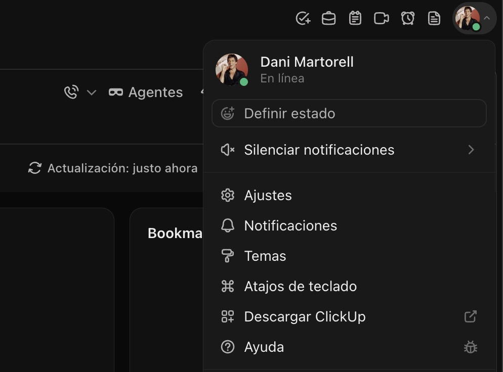
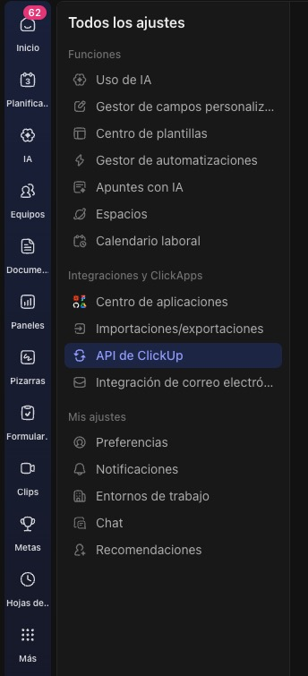
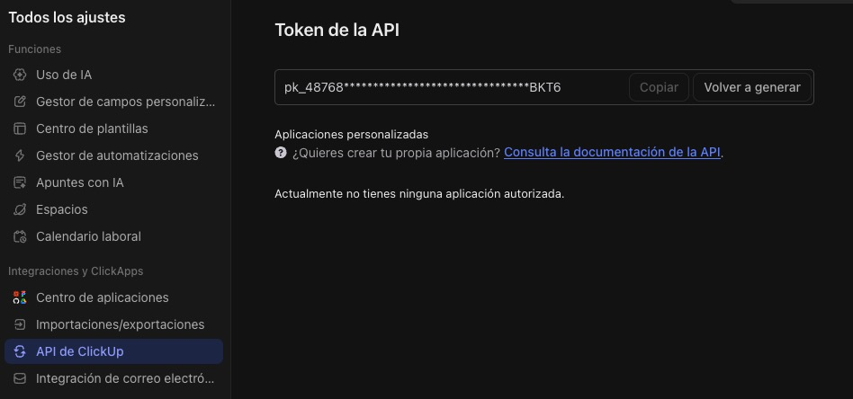

Ayuda · ClickUp
La API Key permite a RecUp crear tickets en tu cuenta de ClickUp en tu nombre. La generas una sola vez y la pegas en el modal de ajustes.
Inicia sesión en app.clickup.com y haz clic en tu avatar (esquina superior derecha) → Ajustes.

Menú del avatar en ClickUp.
En el menú lateral izquierdo de la pantalla de ajustes, busca el apartado API de ClickUp.

Sección Apps dentro de Settings.
Dentro de esta sección verás la opción Generar Token.
Pulsa Generate para crear tu token personal. Cópialo —
empieza por pk_.

Generación del token en ClickUp.
Vuelve a RecUp, abre Configuración desde el avatar y
pega el token en el campo API Key de ClickUp. Guarda.